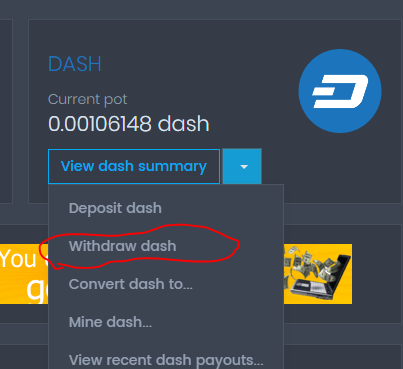

REGISTRO BITFUN
Haz click en registrarte
REGISTRO BITFUN
Haz click en registrarte
 REGISTRO BITFUN DATOS
Rellena tus datos
REGISTRO BITFUN DATOS
Rellena tus datos
 RECLAMAR BITFUN
Haz click en CLAIM
RECLAMAR BITFUN
Haz click en CLAIM
 OFERTAS BITFUN
Gana más con ofertas
OFERTAS BITFUN
Gana más con ofertas
En este articulo aprenderás un método de Como ganar criptomonedas gratis fácilmente en tus ratos libres sin necesidad de inversión, solo entrando de rato en rato a reclamar tus fracciones de BitCoinCore, BitCoinCash, LiteCoin, DogeCoin y DASH. Estas criptomonedas se pagan directamente a una microwallet en la cual puedes intercambiarlas unas por otras y así retirar más rápido.
Coinpot es una microwallet (cartera para criptomonedas) que admite varias monedas y el intercambio entre las mismas, esto significa que si ganas satoshis (fracciones de bitcoin) los podrás convertir en litecoin por ejemplo y viceversa. Esta plataforma tiene 6 faucets (grifos de criptomonedas) en las cuales te regalaran cada cierto tiempo fracciones de estas criptomonedas las cuales puedes reclamar en tu tiempo libre o durante tus descansos de los otros trabajos para ganar dolares por internet.
Primeramente debes abrir una cuenta en Coinpot lo cual podrás hacer siguiendo el siguiente enlace: Ir a Coinpot Luego sigue las instrucciones para registrarte.
INSCRIBIRSE COINPOT Haz click en registrarte
REGISTRARSE COINPOT Llena los datos de registro
DASHBOARD COINPOT podrás ver tu pantalla principal
Una vez registrado con tu correo pasaras a registrarte en cada una de las 6 faucets que tiene Coinpot para regalarte fracciones de criptomonedas. Lo único que necesitas en introducir tu correo con el que te registraste en Coinpot y resolver un captcha, solo en dos casos necesitarás introducir una contraseña.
Como te dije anteriormente es tan sencillo como entrar en el enlace de la faucet que dejare con su imagen más adelante, colocar tu correo y resolver un captcha.

Haz click en el siguiente enlace e introduce tu correo de Coinpot, resuelve el captcha y haz click en CLAIM Ir a Moon BitCoinCore
Haz click en el siguiente enlace y repite el proceso que hiciste con Moonbitcoin. Ir a Moon LiteCoin
Haz click en el siguiente enlace y repite el proceso del ejemplo anterior. Ir a Moon DogeCoin
Haz click en el siguiente enlace y repite el proceso del ejemplo anterior. Ir a Moon BitCoinCash
Haz click en el siguiente enlace y repite el proceso del ejemplo anterior. Ir a Moon dash
Existen otras dos faucets para ganar fracciones de bitcoin a coinpot y son las siguientes.

Para registrarte en BitFun tan solo haz click en la imagen promocional y sigue las instrucciones. También puedes ganar
más satoshis en la sección de ofertas respondiendo encuestas y realizando mini tareas.
Ir a BitFun
Sigue las instrucciones:
REGISTRO BITFUN
Haz click en registrarte
REGISTRO BITFUN DATOS
Rellena tus datos
RECLAMAR BITFUN
Haz click en CLAIM
OFERTAS BITFUN
Gana más con ofertas
Como no necesitas tener las páginas abiertas para que te genere más monedas yo te recomiendo abrirlas cada 40 min o una hora para hacer claim en cada una de ellas, a acepcion de bonus bitcoin que te da la misma cantidad cada 15 minutos, queda a tu criterio si hacerlo cada 15 minutos o más.
Una vez que hayas llegado al minimo de pago en la moneda de tu preferencia (recomiendo litecoin o dash) podrás
retirara tu wallet ya sea Jaxx que es mi wallet recomendada para guardar cantidades moderadas de criptomonedas, o
Payeer que es mi plataforma recomendada para recibir pagos en criptomonedas
Sigue las instrucciones para retirar:

RETIRO LITECOIN
Selecciona Withdraw en la moneda de tu elección.
RETIRO DE COINPOT
Sigue llena los datos solicitados.
 CONFIRMAR RETIRO
Ve a tu correo y confirma el retiro
CONFIRMAR RETIRO
Ve a tu correo y confirma el retiro